接下来，我们再研究一下同指数幂的乘除法则，当底数不同、指数相同的时候，我们又应该怎么办呢？
比如：a 3 ×b 3 ＝？我们把乘方运算展开为乘法运算，可以得到a ×a ×a ×b ×b ×b ，由于乘法存在交换律结合律，所以可以把a 和b 位置调换一下，得到a b ×a b ×a b ，3个a b 连续相乘，结果是（a b ）3 ，用任意数字n 代替指数3，就得到同指数幂的运算法则：a n ×b n ＝（a b ） n ，运算口诀是：同指数的幂相乘，指数不变，底数相乘 ．
由于乘方的结果叫幂，相乘的结果叫积，因此这个口诀也被简称为幂的积等于积的幂 ，同理，积的幂也等于幂的积 ．
下面我们通过例题来感受一下，比如：（2x ）4 ＝？因为2x 是2和x 的乘积，积的幂等于幂的积，因此（2x ）4 ＝24 ×x 4 ，由于2的4次方等于16，因此结果为16x 4 ．
接下来我们再分析一下商的幂的运算规律．我们知道，除以一个数就相当于乘以这个数的倒数，所以商的幂的运算法则，自然也就能通过积的幂的公式推导出来：由于a n ×b n ＝（a b ） n ，假设b ＝
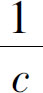
，把 代入公式，得到
代入公式，得到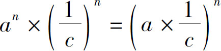
，把a 移动到分子上面，化简得到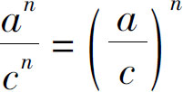
．这就是同指数幂的除法公式，简称商的幂等于幂的商 ．
接下来继续通过例题体验一下．
比如
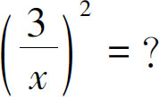
此题处理的是分数的乘方，商的幂等于幂的商，直接把2次方扔到分子分母上，得到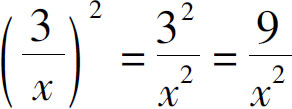
．以上我们研究了指数相同的乘方的运算规则．如果把它和同底数幂的运算比较一下就会发现：当同底数幂乘除的时候，底数不变，指数加减；但是指数相同的情况下，就只能在底数上进行乘除运算，指数本身就不能加减了．那么如果一个乘方，再次乘方以后应该是什么结果呢？
比如：（a 2 ）3 ＝？把两个a 相乘的结果，再连续乘方三次，那会是什么结果呢？仍然把乘方运算展开为乘法，于是得到（a 2 ）3 ＝（a ×a ）3 ＝（a ×a ）×（a ×a ）×（a ×a ），6个a 相乘，所以（a 2 ）3 ＝a 2×3 ＝a 6 ．
那么，如果是（a m ） n 呢？那就是m 个a 的乘积再连续自乘n 次，结果是m ×n 个a 连续相乘．因此可以得到幂的乘方的运算法则：（a m ） n ＝a m n ．也就是说，幂的乘方，底数不变，指数相乘．
例如：（4y 2 ）3 ＝？解决问题的关键是要把系数4搞清楚，要知道4y 2 ＝4×y ×y ，所以y 的指数2，这个2是y 自我相乘的次数，跟系数4没关系，但是整个算式的3次方，既是4的3次方，也是y 2 的3次方，整个算式符合积的幂的运算法则，因此原式等于43 ×（y 2 ）3 ，后者符合幂的乘方法则，指数相乘得到43 ×y 2×3 ，进一步化简，得到64y 6 ．
了解了指数的运算法则以后，再重新看一下底数：我们知道1×1＝1，无论乘几次都等于1，所以1的任何次方都等于1．如果底数是负数呢？由于负负相乘的结果是正数，所以当底数是负数时，如果指数是个偶数，结果就会是一个正数；如果指数是个奇数，结果就会是一个负数．明白了这一点，我们就来一起分析下面的问题：
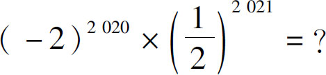
我们知道指数的运算结果非常大，如果直接计算的话，－2自乘2020次结果就太大了，但是不要着急，我们可以分析一下整个算式，找一找化简方法．整个算式不是还要乘以
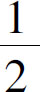
吗？幂的积等于积的幂，2和它相乘以后可以化为数字1．但是目前还不能这样简化，因为这两个算式的指数不同，一个是2020，另一个是2021．不要紧，为了使两式的指数相同，我们把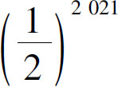
看作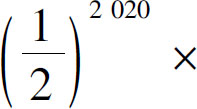
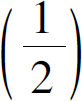
，这样就可以把（－2）2020 和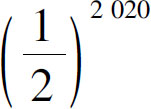
挪到一块儿，它们的指数都是2020，底数就可以相乘了，－2和 相乘的结果是－1，（－1）2020
是多少？这是负数的乘方，那我们就需要判断一下，指数是奇数还是偶数，2020当然是偶数了，所以这个乘方结果就是1，因为后边还要乘以
相乘的结果是－1，（－1）2020
是多少？这是负数的乘方，那我们就需要判断一下，指数是奇数还是偶数，2020当然是偶数了，所以这个乘方结果就是1，因为后边还要乘以 呢，所以结果等于
呢，所以结果等于 ．具体过程如下：
．具体过程如下：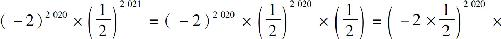
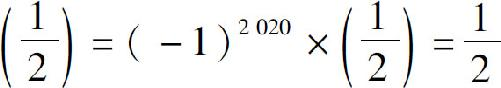
．通过乘方的运算，我们发现指数是这个世界最神奇的数字，别看它占的地方很小，可是只要稍微改变一下，就会发生天翻地覆的变化．我们在前文中说了，无论是科技发展，还是人类文明，这个指数都起着非常重要的作用．在日常生活中，我们经常见到的指数变化有两种：第一，就是财富的积累，我们把存款存到银行里，银行就可以付给我们利息，如果我们短时间内不把钱取出来，银行给我们的利息就会继续产生利息；这样一来，虽然一年的利息并不多，但是一旦积累几十年，我们的本金就可能会翻出数倍．第二，就是知识的积累，我们曾经反复强调过，一定要勤奋努力学习，这是因为我们今天的一分努力，将来换来的就不仅是一分回报，假设在365天当中，我们每天多付出1％的努力，一年下来，就会有37倍的收获，这就是指数的作用．
在前文中我曾经半开玩笑地提到，有人的地方就有江湖恩怨，有数的地方就有加减乘除．通过这两天的讨论，我们发现，虽然这个指数就占了小手指头那么点的地方，人家照样有加减乘除：指数的加法，对应着幂的乘法；指数的减法，对应着幂的除法；指数的乘法对应着幂的乘方；那么，这指数的除法是什么呢？